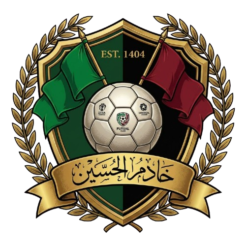

هفته ۱ تا ۴: پایه
- دریبل و پاسهای دقیق
- کنترل توپ با هر دو پا
- شوتهای پایه
- بازیهای ۳ به ۳

برنامه جامع تمرینی برای قهرمانی. آمادهسازی تخصصی بازیکنان و دروازهبانان.
دویدن، حرکات کششی دینامیک و بازیهای کوتاه با توپ.
تمرکز بر دریبل، پاس، کنترل و شوت. تمرینات انفرادی و گروهی.
حمله، دفاع، پرس و موقعیتهای شبیه به بازی واقعی.
حرکات کششی استاتیک و پیادهروی آرام برای جلوگیری از آسیب.